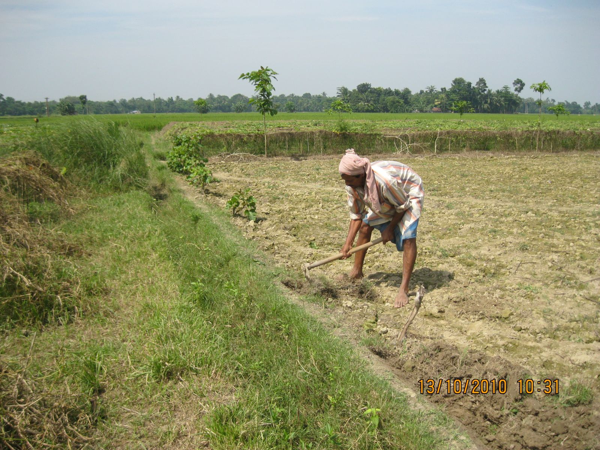
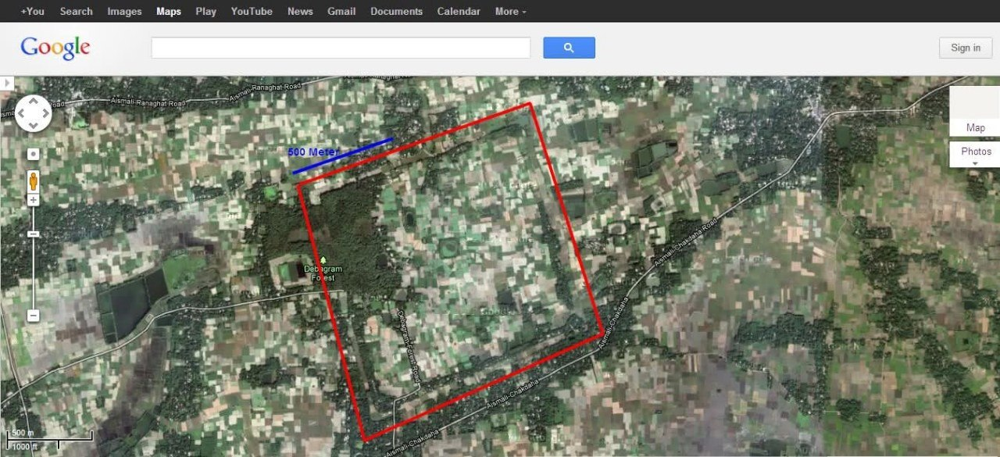

Photographs and short videos from village life, festivals, school events, and community gatherings. Have a photo to add? Send it to us.



নোট
Photographs of people. Get permission before publishing photographs that show identifiable individuals, especially children. For school or panchayat events, the consent of the organisers is usually enough.